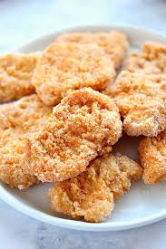

Chicken Nugget Recipe

Description
This is a chicken nugget recipe I was taught when I was very young!
It's very simple and very easy to do, especially if you're busy.
It work with tenders or breasts as well, it's quite versatile!
If you're short on time, it's great for a movie night or for tired nights!
They're also great left over, especially when cooked with fried rice. :3
This recipe will involve three simple steps: cutting the chicken, prepping it for cooking,
and cooking. It doesn't get simpler than this!
If you want to be more ambitious, this recipe is very similar to making >Wiener Schnitzel,
Chicken Milanesa, or katsu!
Recommended Sides
- Your favorite fingerfood
- Fries
- Chips
- Brocolli, Zucchini, any vegetable you like really
Ingredients
- Chicken Tenders or Breasts
- 2-3 eggs
- Bread Crumbs
- Vegetable, Olive, or Canola Oil (your preference!)
Steps
Preparation
- Slice your chicken breasts or tenders into thin pieces
- Beat two eggs in a separate bowl
- Pour bread crumbs onto a plate
- Set up a plate with a paper towel on it for your cooked chicken!
- Leave the eggs and bread crumbs to the side.
If the eggs or bread crumbs start running low,
you'll want to be ready to add more!
Cooking
- Put a nonstick pan to medium heat, fill it with cooking oil
- Dip one of your thinly sliced chicken into the egg. Pick it up and shake it to remove excess
- Put the egged chicken into the bread crumbs, covering it on both sides
- Put the breaded chicken onto the pan. You can repeat steps 2-3 until your pan has 4 pieces in it
- Let it cook until the edges start to brown, then flip the piece
- Check the bottom for when it's golden brown, then move the chicken to your toweled plate for drying
- Repeat with all your pieces until your done!